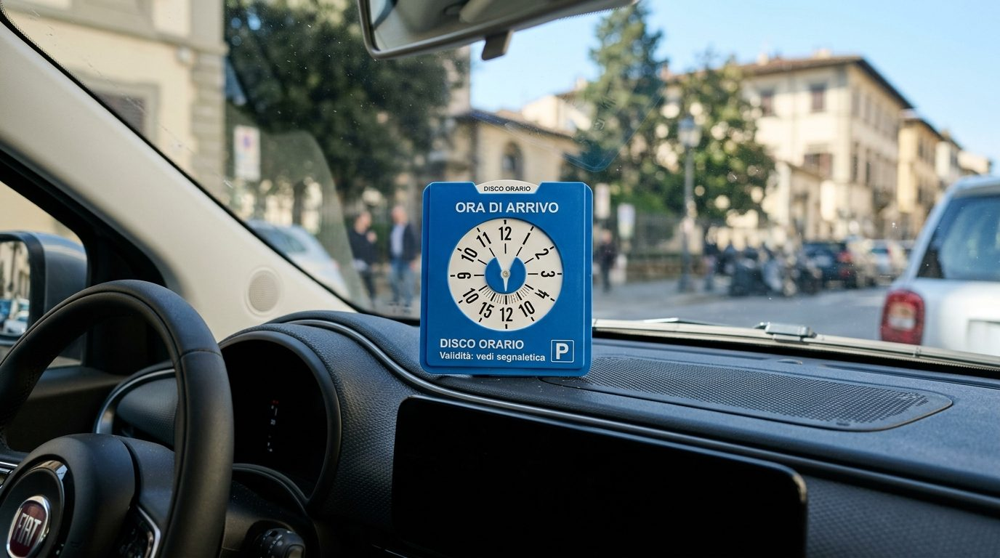
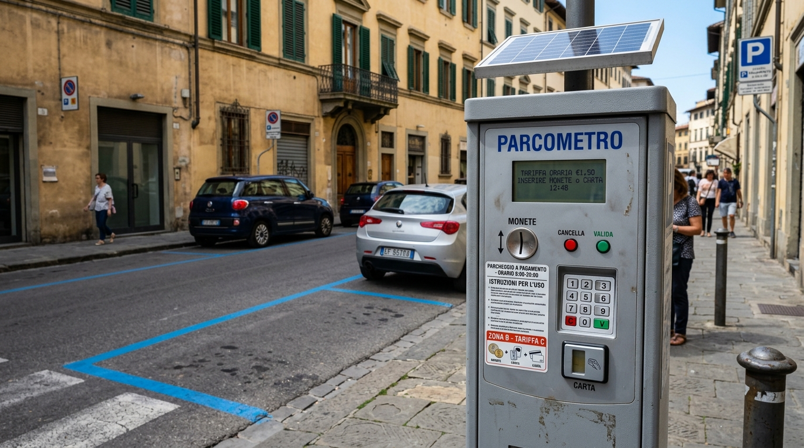
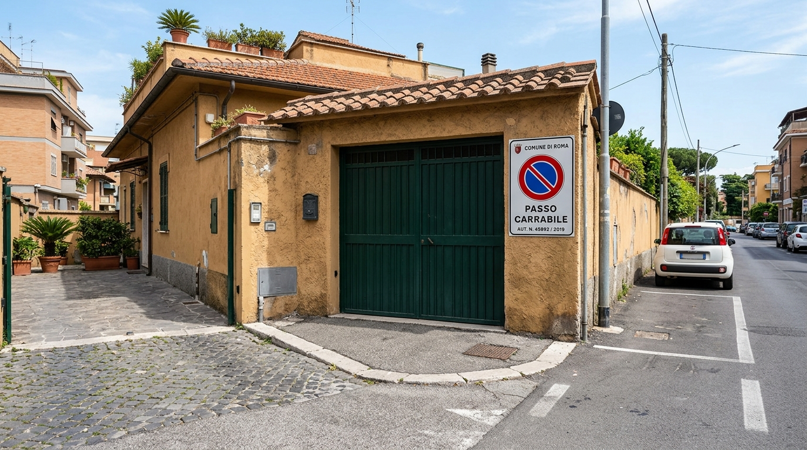
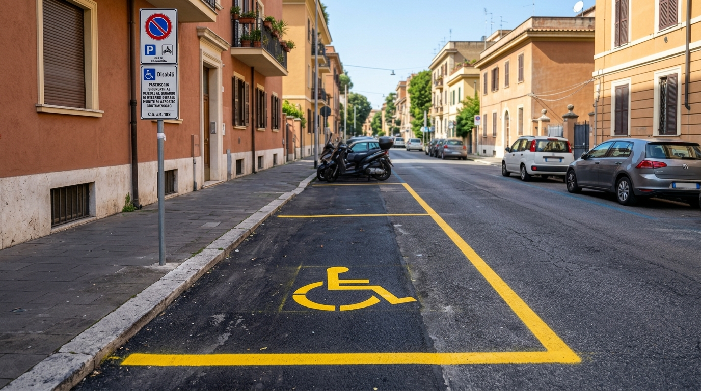
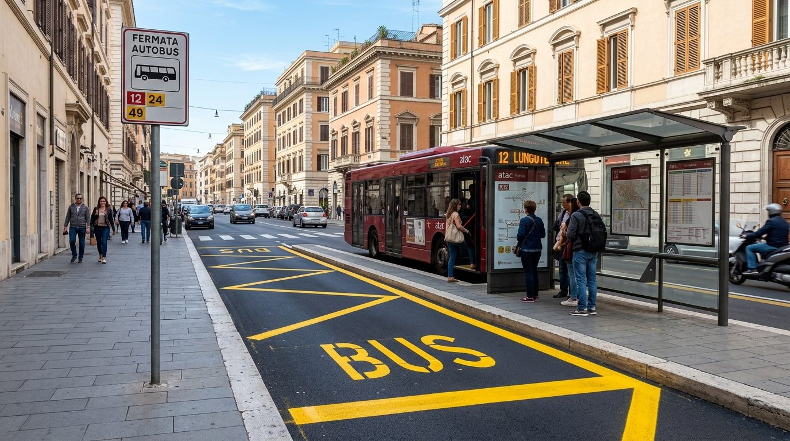
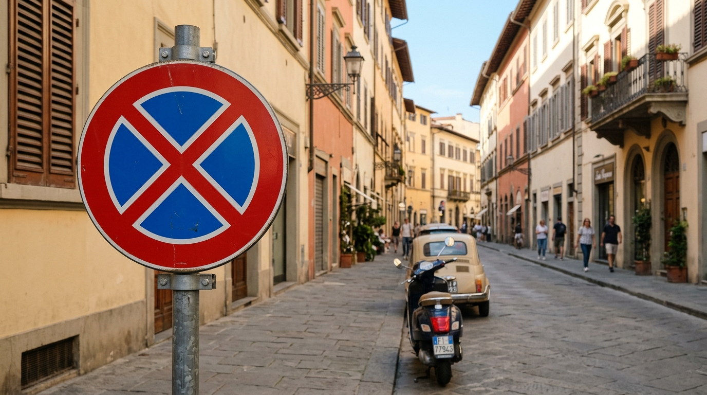
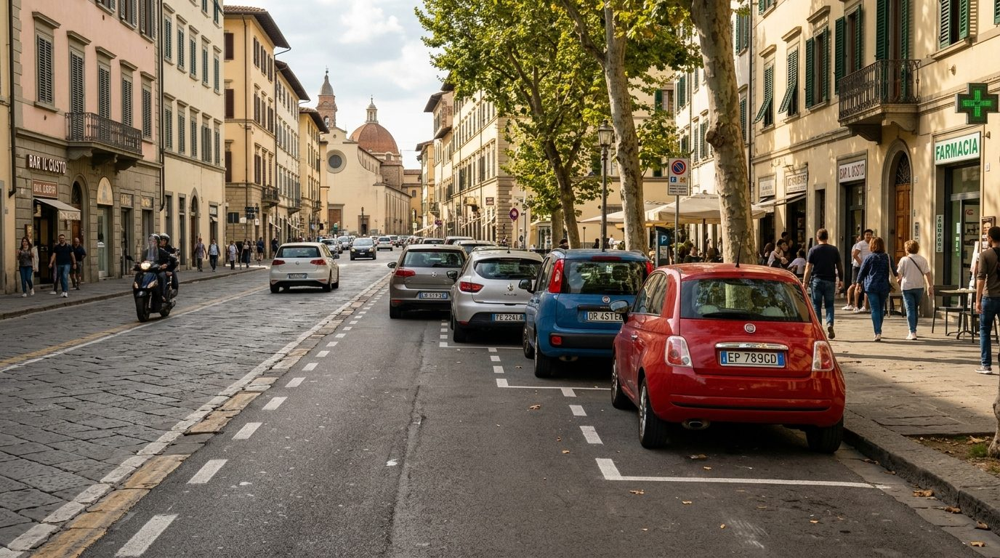
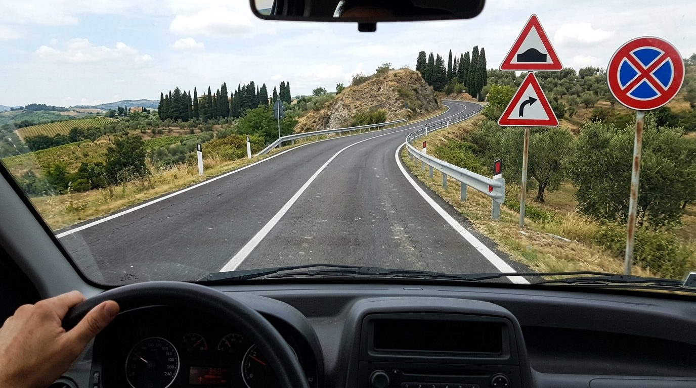
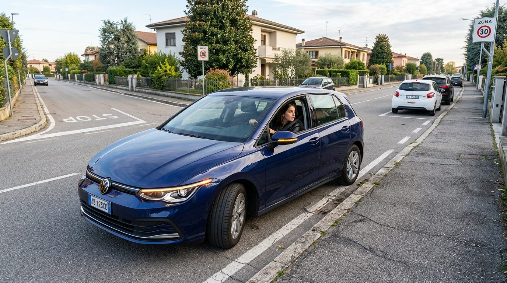

الباب 16: الوقوف والتوقف والركن وبدء السير
الدليل الهندسي والقانوني الشامل للتمييز القاطع بين التوقف المؤقت (Fermata)، والوقوف والركن (Sosta)، والتوقف القسري لحركة المرور (Arresto)، والوقوف الاضطراري للأعطال (Sosta di emergenza). يشمل القواعد الصارمة للمسافات القانونية (5 أمتار من التقاطعات وممرات المشاة، 15 متراً من مواقف الحافلات ومزلقانات القطار)، شروط الوقوف على اليسار في الشوارع ذات الاتجاه الواحد (ترك 3 أمتار)، أحكام قرص الوقوف (Disco orario)، حالات سحب السيارة بالونش (Rimozione forzata)، وقواعد بدء السير وفحص النقاط العمياء.
الشروط والواجبات القانونية:
- المسافة الإلزامية: 5 أمتار على الأقل من حافة التقاطع الأقرب داخل المدن (Centri abitati).
- نطاق الحظر: ممنوع الوقوف (Sosta) وممنوع التوقف (Fermata) منعاً باتاً لأقل من 5 أمتار.
- خارج المدن: يمنع الوقوف والتوقف في حرم التقاطع تماماً وعلى جوانب الطريق بالقرب منه.
المشاهد البصرية الميدانية لمواقف وسحب السيارات في إيطاليا

قرص تحديد الوقتقرص الوقوف الأزرق (Disco Orario)
يوضع بوضوح على التابلوه خلف الزجاج الأمامي لضبط ساعة الوصول في مناطق الوقوف محددة الوقت؛ يمنع تحريكه دون تحريك السيارة.

المواقف المدفوعةجهاز تذاكر المواقف والخطوط الزرقاء (Parcometro)
المواقف المحاطة بخطوط زرقاء (Strisce Blu) تتطلب شراء تذكرة وإبرازها على التابلوه لتوثيق وقت انتهاء مدة الركن المدفوعة.

مخرج الجراج النظاميمخرج المرآب المصرح به (Passo Carrabile)
لوحة رسمية تحمل شعار البلدية ورقم الترخيص؛ تحظر الركن والوقوف (Sosta) منعاً لإغلاق المخرج، وتبيح التوقف الوجيز (Fermata).
 سحب المركبة بالونش
سحب المركبة بالونش
ونش شرطة المرور والسحب الإداري (Carro Attrezzi)
يتم رفع وسحب المركبة المخالفة بالونش عند إغلاق مداخل الجراجات، أو الوقوف في أماكن المعاقين، أو الأماكن المزودة بلوحة السحب الإضافية.

مواقف ذوي الاحتياجاتالمواقف الصفراء المخصصة للمعاقين (Stalli Invalidi)
مساحات محددة بالخطوط الصفراء وشعار الكرسي المتحرك؛ مخصصة حصرياً لحاملي تصريح الإعاقة الرسمي (Contrassegno disabili) ويمنع غيرهم تماماً.

موقف الحافلات 15mموقف حافلات النقل العام (Fermata Autobus)
المنطقة الصفراء المتعرجة المخصصة لصعود ونزول ركاب الحافلات؛ يمنع الوقوف (Sosta) لمسافة 15 متراً قبل وبعد اللافتة، ويباح التوقف الوجيز.
المقارنة البصرية الحاسمة: الفروق الجوهرية في قواعد الوقوف والتوقف
الفروق الدقيقة التي يركز عليها واضع الامتحان الوزاري بين المناورات وحالات السحب الإداري
Fermata vs Sosta
• Fermata: زمن وجيز جداً لركوب أو نزول الركاب، والسائق خلف المقود وجاهز للتحرك فوراً دون إعاقة السير.
• Sosta: إيقاف ممتد مع مغادرة السائق للسيارة، وتتطلب إطفاء المحرك وتأمين فرامل اليد وإغلاق الأبواب.
Divieto di Sosta vs Fermata
• منع الوقوف (خط مائل واحد): يمنع الركن (Sosta) فقط، لكنه يسمح بالتوقف الوجيز (Fermata).
• منع التوقف (صليب أحمر X): يحظر الركن والتوقف تماماً ومطلقاً ولا يسمح حتى بإنزال راكب لثانية واحدة!
Passo Carrabile
• الركن (Sosta): ممنوع منعاً باتاً أمام المخرج ويوجب سحب السيارة بالونش (Rimozione forzata).
• التوقف (Fermata): مسموح به إذا ظل السائق خلف المقود ولم يغلق الطريق على سيارة قادمة من الداخل.
Partenza dal Margine
• يجب إعطاء الأسبقية لجميع المركبات المارة على الطريق.
• فحص المرايا والنقطة العمياء (Angolo cieco) بالالتفات السريع.
• تشغيل إشارة تغيير الاتجاه (Freccia) قبل الانطلاق في الوقت المناسب.
البطاقات المعرفية المعتمدة للوقوف والتوقف وبدء السير
إشارة منع الوقوف (Divieto di Sosta) — Fig. 62
Segnale di Divieto di Sostaتمنع إيقاف السيارة وركنها ومغادرتها (Sosta)، لكنها تسمح بالتوقف المؤقت لركوب أو نزول الركاب (Fermata) بشرط ألا يعطل السير. داخل المدن تسري من 08:00 إلى 20:00 ما لم تذكر لوحة إضافية غير ذلك، وخارج المدن تسري 24 ساعة دائماً.
- ✅ تمنع ركن السيارة الممتد ومغادرتها (Vieta la sosta ma consente la fermata)
- ✅ خارج المدن تسري طوال الـ 24 ساعة دون الحاجة لأي لوحة إضافية توضح الأوقات
- ✅ ينتهي مفعولها عند أول تقاطع طرق مقبل ما لم تتكرر بعده مع سهم إضافي
- ❌ تمنع التوقف الوجيز لإنزال راكب (Fermata) — خطأ، التوقف مسموح تماماً!
- ❌ تسري دائماً على جانبي الطريق معاً — خطأ، تسري فقط على الجانب المثبتة عليه!

إشارة منع التوقف التام (Divieto di Fermata) — Fig. 63
Segnale di Divieto di Fermataتحظر منعاً باتاً ومطلقاً أي إيقاف إرادي للمركبة، سواء كان وقوفاً وركناً ممتداً (Sosta) أو توقفاً لحظياً وجيزاً (Fermata). تسري على مدار 24 ساعة في اليوم داخل وخارج المدن دون استثناء.
- ✅ تحظر التوقف المؤقت والوقوف والركن معاً (Vieta sia la sosta sia la fermata)
- ✅ تسري 24 ساعة يومياً داخل وخارج المدن دون الحاجة إلى لوحات إضافية
- ✅ يترتب على مخالفتها سحب المركبة بالونش فوراً (Rimozione forzata)
- ❌ تسمح بالتوقف لمدة تقل عن دقيقة واحدة لإنزال حقيبة — خطأ، ممنوع قطعياً!
- ❌ تسمح بالتوقف ليلاً بعد الساعة 20:00 داخل المدن — خطأ، تسري 24 ساعة كاملة!
الوقوف المنظم بقرص الساعات (Sosta con Disco Orario) — Fig. 64
Sosta Regolamentata con Disco Orarioتحدد مدة قصوى مسموحة للوقوف المجاني (مثلاً 60 دقيقة). يلتزم السائق بوضع قرص الوقوف على التابلوه مع ضبط مؤشر ساعة الوصول (Ora di arrivo).
- ✅ يجب الإشارة إلى وقت بدء الوقوف بوضوح عبر قرص الساعات على التابلوه
- ✅ إذا لم يتوفر قرص، يجوز كتابة ساعة الوصول بخط اليد ووضعها خلف الزجاج
- ✅ لا يلزم استخدام القرص خارج الساعات المحددة باللوحة الإضافية
- ❌ يجوز تمديد الوقوف بتدوير القرص للأمام دون تحريك السيارة — فخ شهير، ممنوع قطعياً!
- ❌ يجب ضبط القرص على ساعة المغادرة المتوقعة — خطأ، يضبط على ساعة الوصول!
منطقة مواقف السيارات (Area di Parcheggio) — Fig. 83
Segnale di Parcheggio e Aree di Sostaتدل على ساحة أو مساحة مخصصة لركن السيارات؛ يمكن أن تكون مجانية (Strisce Bianche) أو مدفوعة الأجر بتذكرة (Strisce Blu) مع أوقات وتعرفات محددة.
- ✅ تدل على إمكانية ركن السيارات وفق الطريقة الموضحة باللوحات (طولياً، عرضياً، بميل)
- ✅ في المواقف المدفوعة يجب شراء التذكرة من الـ Parcometro وإبرازها على التابلوه
- ✅ قد تحدد لوحة إضافية حصر الموقف على فئة معينة من المركبات
- ❌ تبيح الوقوف في الصف الثاني إذا كانت المساحات ممتلئة — خطأ، ممنوع دائماً!
- ❌ تعفي السيارات الهجينة والكهربائية من دفع الرسوم تلقائياً في كافة المدن — خطأ!
مخرج المرآب المصرح به (Passo Carrabile) — Fig. 84
Pannello Integrativo Passo Carrabileلوحة نظامية تثبت عند مداخل الجراجات والممتلكات الجانبية؛ تمنع وقوف وركن السيارات (Sosta) على مدار 24 ساعة، لكنها تبيح التوقف الوجيز (Fermata) لإنزال راكب دون تعطيل المخرج.
- ✅ تمنع الركن (Sosta) أمام البوابة لمنع إغلاق المخرج، ويترتب عليها سحب السيارة
- ✅ تسمح بالتوقف المؤقت (Fermata) لركوب أو نزول شخص بشرط بقاء السائق بالسيارة
- ✅ لكي تكون صالحة قانوناً يجب أن تحتوي على اسم البلدية ورقم الترخيص وسنة الصدور
- ❌ تمنع التوقف الوجيز لإنزال راكب — فخ الامتحان المتكرر: التوقف مسموح!
- ❌ تسمح لمالك الجراج نفسه بالركن أمام بوابته على الطريق العام — خطأ، الركن ممنوع للجميع!

الوقوف والتوقف داخل المدن (Nei Centri Abitati)
Fermata e Sosta nei Centri Abitatiالقاعدة العامة: يجب الوقوف في أقصى الجانب الأيمن من الطريق في اتجاه السير، موازياً لحافة الرصيف. في الطرق ذات الاتجاه الواحد يباح الوقوف على اليسار أيضاً بشرط ترك مساحة كافية (3 أمتار).
- ✅ يجب وضع السيارة أقرب ما يكون للرصيف الأيمن وفي اتجاه السير
- ✅ إذا لم يوجد رصيف مرتفع، يجب ترك مساحة لا تقل عن متر واحد لمرور المشاة
- ✅ يمنع الوقوف فوق الأرصفة ما لم توجد خطوط ومربعات مخصصة لذلك
- ❌ يجوز الوقوف في الاتجاه المعاكس لتسهيل المغادرة — خطأ، يجب الوقوف دائماً في اتجاه السير!
- ❌ يجوز الصعود بعجلتين فوق الرصيف لتوسيع الطريق — خطأ، ممنوع تماماً دون علامات!
الوقوف والتوقف خارج المدن (Fuori dei Centri Abitati)
Fermata e Sosta Fuori dei Centri Abitatiخارج المدن، يجب الوقوف والتوقف خارج نهر الطريق (Carreggiata) تماماً، على الكتف الترابي (Banchina) أو في مواقف الركن الجانبية (Piazzole di sosta).
- ✅ يجب إخراج السيارة كلياً من مسار السير على الكتف أو في الجيوب المخصصة
- ✅ إذا استحال إخراجها، يجب وضعها في أقصى حافة اليمين وتشغيل أضواء الطوارئ ليلاً
- ✅ ليلاً أو في ضعف الرؤية يجب ترك أضواء الموضع (Luci di posizione) مضاءة
- ❌ يجوز الوقوف على نهر الطريق خارج المدن إذا شغلت الأضواء الرباعية — خطأ!
- ❌ يسمح بالوقوف على حافة الطريق اليسرى خارج المدن — خطأ، محظور قطعياً!

حظر الوقوف والتوقف في المرتفعات والمنحنيات
Divieto su Dossi, Curve e Raccordiتعتبر المرتفعات المحدبة (Dossi) والمنحنيات الخطرة (Curve) من أخطر النقاط على شبكة الطرق بسبب انعدام مسافة الرؤية.
- ✅ خارج المدن: يمنع الوقوف والتوقف معاً على نهر الطريق في المنحنيات والمرتفعات وبالقرب منها
- ✅ داخل المدن: يمنع الوقوف والتوقف على المرتفعات وفي المنحنيات؛ لكن يمنع الوقوف فقط بالقرب منها
- ✅ يمنع الاستدارة للخلف (Inversione) أو الرجوع للخلف على قمم المرتفعات
- ❌ يسمح بالتوقف المؤقت على قمة المرتفع لإنزال راكب — خطأ مميت، ممنوع قطعياً!
- ❌ يسمح بالوقوف في المنحنى إذا كانت الطريق باتجاه واحد — خطأ، محظور دائماً!
قاعدة مسافة الـ 5 أمتار (التقاطعات ومعابر المشاة)
Distanza di 5 Metri da Incroci e Strisce Pedonaliلحماية زوايا الرؤية ومنع وقوع الحوادث عند المنعطفات، يفرض القانون مسافة عازلة لا تقل عن 5 أمتار قبل وبعد التقاطعات داخل المدن، وقبل معابر المشاة.
- ✅ يمنع الوقوف داخل المدن على مسافة تقل عن 5 أمتار من حافة التقاطع الأقرب
- ✅ يمنع الوقوف على مسافة تقل عن 5 أمتار قبل معابر المشاة والدراجات الهوائية
- ✅ يمنع الوقوف والتوقف فوق خطوط عبور المشاة تماماً
- ❌ يمنع الوقوف على مسافة 5 أمتار بعد معبر المشاة — خطأ، الحظر قبل المعبر وليس بعده!
- ❌ المسافة المشددة من التقاطعات داخل المدن هي 15 متراً — خطأ، 5 أمتار فقط!
سحب السيارة بالونش وكلبشة العجلات (Rimozione e Blocco)
Rimozione Forzata o Blocco dei Veicoliإجراء إداري تحفظي تنفذه الشرطة المحلية لإزالة المركبات التي تشكل خطراً جسيماً أو عائقاً لحركة المرور، أو في الأماكن المزودة باللوحة الإضافية للونش (Pannello rimozione forzata).
- ✅ يطبق السحب عند الوقوف أمام Passo Carrabile أو في مواقف المعاقين أو محطات الحافلات
- ✅ يطبق عند الوقوف في الصف الثاني (Seconda fila) إذا شكلت السيارة عائقاً للمرور
- ✅ يتحمل مالك السيارة كافة مصاريف السحب والإيداع في الحجز الإداري بالإضافة للغرامة
- ❌ السحب يطبق فقط في وجود اللوحة الإضافية — خطأ، يطبق تلقائياً أمام Passo Carrabile ومواقف الحافلات!
- ❌ يتم إعفاء السائق من مصاريف السحب إذا دفع الغرامة فوراً — خطأ، المصاريف إجبارية!
التوقف القسري لحركة المرور (L'Arresto del Veicolo)
Arresto per Esigenze della Circolazioneالتوقف المؤقت الإجباري الذي تفرضه متطلبات السير على الطريق: أمام إشارة المرور الحمراء، أو بإشارة من شرطي المرور، أو بسبب الازدحام المروري، أو لإعطاء أسبقية المرور.
- ✅ ناتج عن متطلبات الطريق وقواعد المرور ولا يخضع لرغبة السائق أو اختياره
- ✅ لا يعتبر توقفاً مؤقتاً (Fermata) ولا وقوفاً (Sosta) ولا تنتهك به إشارات المنع
- ✅ يجب التوقف خلف خط التوقف العرضي (Striscia trasversale di arresto) دون تجاوزه
- ❌ التوقف في الإشارة الحمراء ينتهك إشارة منع التوقف (Divieto di fermata) — خطأ فادح!
- ❌ يجب تشغيل الأضواء الرباعية (4 frecce) في كل توقف عند الإشارات الضوئية — خطأ!

مناورة بدء السير من حافة الطريق (Partenza del Veicolo)
Inizio della Marcia dal Margine della Carreggiataمن أخطر المناورات المركبة؛ تتطلب التأكد التام من عدم تعريض مستخدمي الطريق للخطر، وإعطاء الأسبقية للمركبات المارة، واستخدام المرايا وفحص الزاوية الميتة وتشغيل الغماز.
- ✅ يجب إعطاء أسبقية المرور لجميع المركبات المارة على نهر الطريق دون استثناء
- ✅ فحص مرآة الرؤية الخلفية والمرآة الجانبية والالتفات السريع لفحص الزاوية الميتة (Angolo cieco)
- ✅ تشغيل إشارة تغيير الاتجاه اليسرى (Indicatore di direzione) في وقت مبكر قبل التحرك
- ❌ للمركبة البادئة في السير حق الأسبقية لأنها قادمة من اليمين — خطأ خطير، يجب إعطاء الأسبقية!
- ❌ تكفي رؤية المرآة الداخلية وحدها دون الحاجة لفحص المرايا الجانبية — خطأ!
مواقف ذوي الاحتياجات الخاصة (Stalli Riservati Invalidi)
Sosta dei Veicoli al Servizio di Persone Invalideأماكن محددة بالخطوط الصفراء وشعار الكرسي المتحرك؛ مخصصة للمركبات التي تخدم الأشخاص ذوي الإعاقة الحركية والحاملين للتصريح الخاص (Contrassegno invalidi).
- ✅ يمنع الوقوف والركن لجميع المركبات الأخرى دون استثناء وتطبق غرامة وخصم نقاط وسحب بالونش
- ✅ يجب إبراز التصريح الأصلي بوضوح في الجزء الأمامي من السيارة
- ✅ تبيح بعض البلديات للمركبات الحاملة للتصريح الركن المجاني في الخطوط الزرقاء إذا كانت مواقفهم ممتلئة
- ❌ يجوز استخدام الموقف إذا كان الشخص المعاق ليس بالسيارة — خطأ، التصريح شخصي ومقيد بوجوده!
- ❌ يجوز الركن مؤقتاً لمدة 10 دقائق لشراء دواء — خطأ، محظور تماماً!
الوقوف في الشوارع ذات الاتجاه الواحد (Strade a Senso Unico)
Sosta su Carreggiata a Senso Unico di Marciaاستثناء قانوني هام: في الشوارع الحضرية ذات الاتجاه الواحد، يسمح بالوقوف على الجانب الأيسر أيضاً بشرط بقاء مساحة لا تقل عن 3 أمتار تكفي لمرور صف واحد من السيارات.
- ✅ يسمح بالوقوف على الجانبين الأيمن والأيسر في الشارع ذي الاتجاه الواحد داخل المدن
- ✅ يشترط بقاء مساحة خالية لا تقل عن 3 أمتار (Spazio non inferiore a 3 metri) لمرور المركبات
- ✅ يجب توجيه السيارة دائماً في اتجاه حركة السير القانوني
- ❌ الوقوف على الجانب الأيسر مسموح في جميع شوارع المدينة حتى ذات الاتجاهين — خطأ خطير!
- ❌ الحد الأدنى للمساحة المتبقية هو متران فقط — خطأ، 3 أمتار على الأقل!
أخطر الأسئلة الوزارية المخادعة في الوقوف والتوقف
"La fermata è vietata davanti ai passi carrabili"
«يمنع التوقف المؤقت (Fermata) أمام مخارج الجراجات المصرح بها»
"La sosta e la fermata sono vietate su tutto il tratto di 5 metri dopo l'attraversamento pedonale"
«يمنع الوقوف والتوقف على كامل مسافة الـ 5 أمتار بعد معبر المشاة»
"In una zona a sosta regolamentata con disco orario, è consentito aggiornare l'orario di inizio sosta senza spostare il veicolo"
«في منطقة الوقوف المنظم بقرص الساعات، يجوز تحديث وقت بدء الوقوف دون تحريك السيارة»
"La sosta in seconda fila è sempre vietata per qualsiasi tipo di veicolo a motore, senza eccezioni"
«الوقوف في الصف الثاني ممنوع دائماً لكافة أنواع المركبات الآلية دون أي استثناء»
"In prossimità della fermata autobus non segnalata da strisce a zig-zag, la fermata è vietata per 15 metri prima e dopo il cartello"
«بالقرب من موقف الحافلات غير المخطط، يمنع التوقف المؤقت لمسافة 15 متراً قبل وبعد اللافتة»
"Nelle strade urbane a senso unico di circolazione la sosta è consentita anche sul lato sinistro, purché rimanga uno spazio di almeno 3 metri"
«في الشوارع الحضرية ذات الاتجاه الواحد، يباح الوقوف على الجانب الأيسر أيضاً بشرط بقاء مسافة 3 أمتار على الأقل»
"Il segnale di DIVIETO DI FERMATA vieta la fermata ma consente la sosta per un tempo inferiore a 15 minuti"
«إشارة منع التوقف تمنع التوقف ولكنها تسمح بالركن لمدة تقل عن 15 دقيقة»
"Durante la fermata il conducente può allontanarsi dal veicolo per sbrigare commissioni rapide"
«أثناء التوقف الوجيز (Fermata) يجوز للسائق الابتعاد عن المركبة لقضاء مهام سريعة»
"Sui dossi e nelle curve delle strade extraurbane è vietata sia la sosta sia la fermata sulla carreggiata"
«على المرتفعات المحدبة والمنحنيات في الطرق خارج المدن يمنع الوقوف والتوقف معاً على نهر الطريق»
"L'arresto del veicolo al semaforo rosso è considerato fermata ed è vietato in presenza del segnale di DIVIETO DI FERMATA"
«يعتبر توقف السيارة عند الإشارة الحمراء توقفاً مؤقتاً (Fermata) ويحظر في وجود إشارة منع التوقف»
"Negli stalli di sosta riservati agli invalidi la sosta è consentita a tutti i veicoli per una durata massima di 10 minuti con 4 frecce"
«في المواقف المخصصة للمعاقين يسمح بالوقوف لجميع السيارات لمدة أقصاها 10 دقائق مع تشغيل أضواء الطوارئ»
"Nelle strade urbane la sosta è vietata in corrispondenza e a meno di 5 metri dall'intersezione"
«في الشوارع الحضرية، يمنع الوقوف في حرم التقاطعات وعلى مسافة تقل عن 5 أمتار منها»